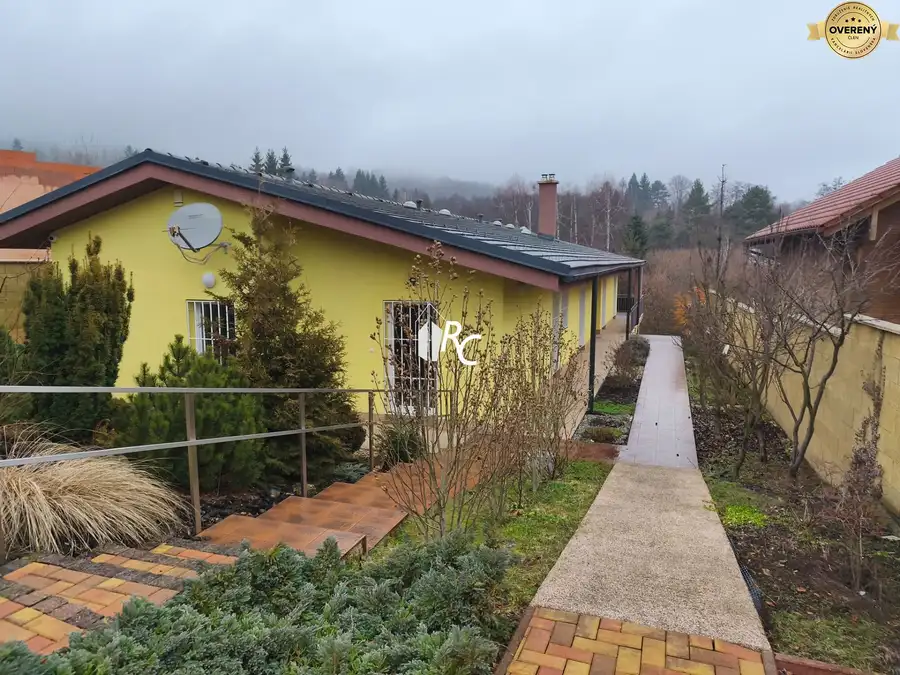
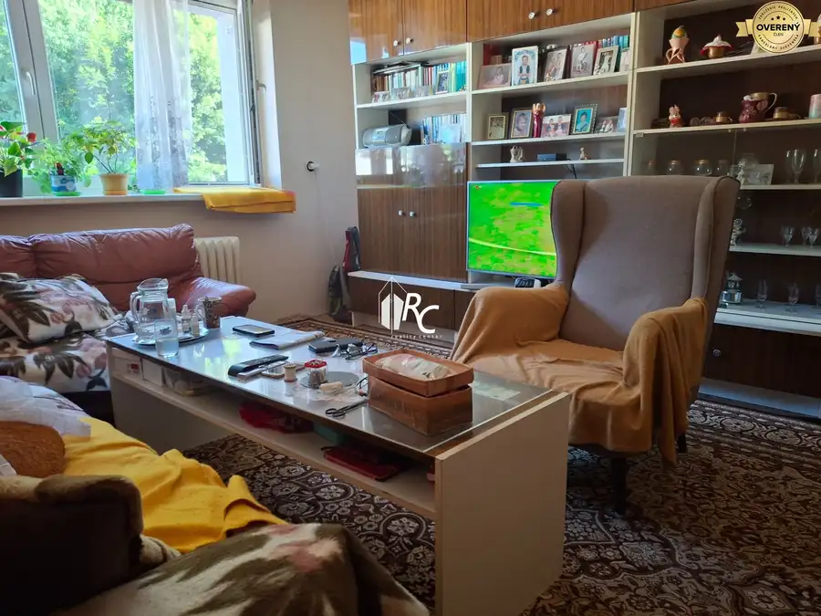
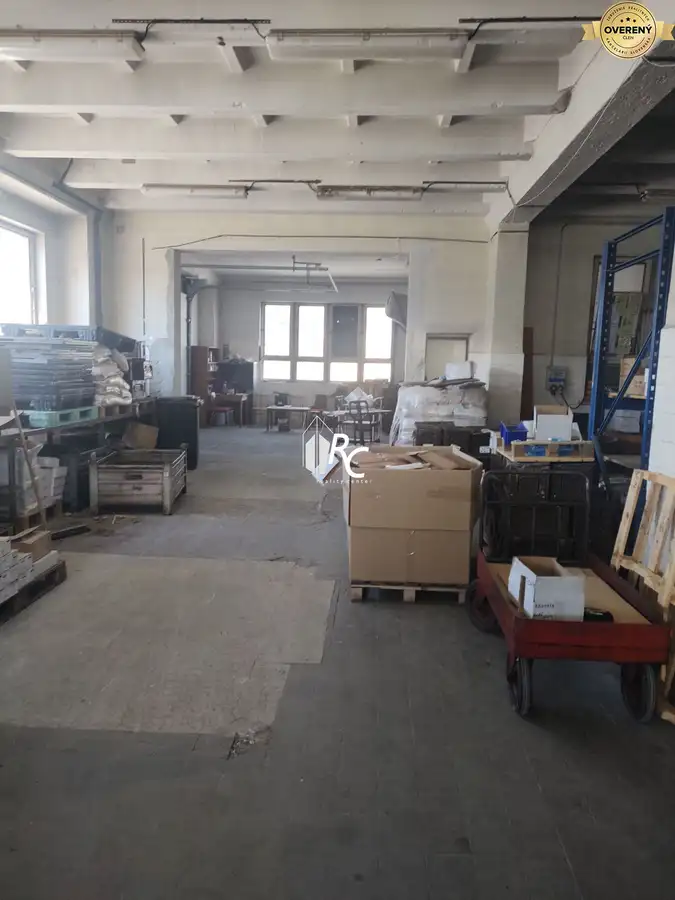

Priestranný dom v Trebostove
Trebostovo
- Dispozícia5-izbový
- Plocha295 m²
- Vlastníctvoosobné
O nehnuteľnosti
Naša realitná kancelária Vám ponúka nadštandardný rodinný dom postavený s použitím kvalitných materiálov, skolaudovaný v 11/2005.
Dom má dve poschodia, dole (169m2) je vstupná hala, jedáleň s kuchyňou, rozľahlá obývacia izba s východom na krytú terasu+2 ďalšie izby , kúpeľňa s rohovou vaňou-vírivkou, dve umývadlá, bidet, WC, kotolňa s plynovým kotlom, šatníkový priestor, chodba a drevené schodisko na poschodie (126m2), na ktorom sa nachádza obrovská viacúčelová hala cez celú dĺžku domu a druhá izba a kúpeľňa. V hale je kabínková sauna a veľké možnosti úložného priestoru, na fitnes priestor, pracovňu, s možnosťou predelenia na dve miestnosti.
Dom má murivo z Porothermu 44cm, kvalitné drevené okná z exotickej dreviny Meranti s vonkajšími žalúziami, z toho dve sú s elektrickým ovládaním. Strecha je krytina Bramac, zateplená, rovnako aj obvodový plášť stien.
V dome je kombinované kúrenie, plynový kotol a radiátory, v obývačke je kachľová pec na pevné palivo, v kúpeľni a vstupnej chodbe je elektrické podlahové kúrenie.
podlahy v izbách dole sú z masívnych drevených parkiet, strop je keramický , nad kuchyňou a obývačkou je vytvorený ako drevený trámový. Dvere sú taktiež z masívneho dreva, rovnako na kuchynskej linke predné dvierka. Celá kuchyňa z masívu je v cene.
Kanalizácia je riešená vlastnou žumpou, už je k dispozícii obecná kanalizácia, dá sa na ňu pripojiť, ide cestou okolo pozemku
Pozemok má výmeru 2153m2 , v svahu nad domom je oporný múr, z ulice sú 2 samostatné panelové garáže, z toho jedna je aj pre rozmernejšie auto.
Pozemok je v miernom svahu, nad domom sa viac zvažuje a tu je pekná výsadba ovocných stromov, vedľa domu je aj v svahu samostatná pivnica.
Popritom pozdĺž pozemku, za asfaltovou cestou tečie potok.
internet je dostupný cez wifi, no tesne pri pozemku je vedený aj optický kábel so silnejším internetom, takže sú dve možnosti napájania sa na internetovú sieť. TV je satelitná.
Parametre
| Rozloha pozemku | 2153 m² |
|---|---|
| Zastavaná plocha | 207.47 m² |
| Úžitková plocha | 295 m² |
| Počet poschodí | 2 |
| Počet izieb | 5 |
| Vlastníctvo | osobné |
| Odvoz odpadu | áno |
| Voda | verejný vodovod |
| El. napätie | 230/400V |
| Plyn | áno |
| Kanalizácia | žumpa |
| Internet | lokálny poskytovateľ |
| Kúpeľňa | vaňa a sprchovací kút |
| Vykurovanie | vlastné – kombinované |
| Balkón | nie |
| Lódžia | nie |
| Terasa | áno - 1 |
| Pivnica | áno |
| Garáž | áno - 2 autá |
| Inžinierske siete | áno |
| Postavené z | Porotherm |
| Zariadenie | čiastočne |
| Zateplený objekt | áno |
| Strecha | pôvodná |
| Krb | áno |
| Klimatizácia | nie |
| Bezbariérový prístup | nie |
| Okná | drevené |
| Terén | mierny svah |
| Prístupová cesta | asfaltová cesta |
| Dátum zverejnenia | 6. 5. 2026 |
Kde to je
Mohlo by Vás zaujímať

Rodinné domy10 399 000 €Rozľahlý rodinný dom v lokalite Stráne Martin 6-izbový243 m² Tento rodinný dom je umiestnený takmer na konci v kľudnej uličke na pozemku mierne sa zvažujúcom ku potoku, ktorý je na hranici pozemku, čo vytvára…
Byt10 120 000 €Dvojbyt/ 4-5 izbový veľký byt Harmanec 4+1127.17 m²3. podlažie Ide o 2 bytové jednotky s 2 kuchyňami a spoločným WC a kúpeľňou, takže je to vhodné na používanie jednou väčšou rodinou, pričom, keď by sa urobila…
Nebytové priestory10 Cena dohodouAdministratívne, výrobné a skladové priestory na prenájom Martin 1033 m² Na prenájom sú k dispozícii priestory v budove na 1. a2.nadzemnom podlaží. Z toho 223m2 je po 5€/m2, kde sú už opravené priestory a vymenené okná.…